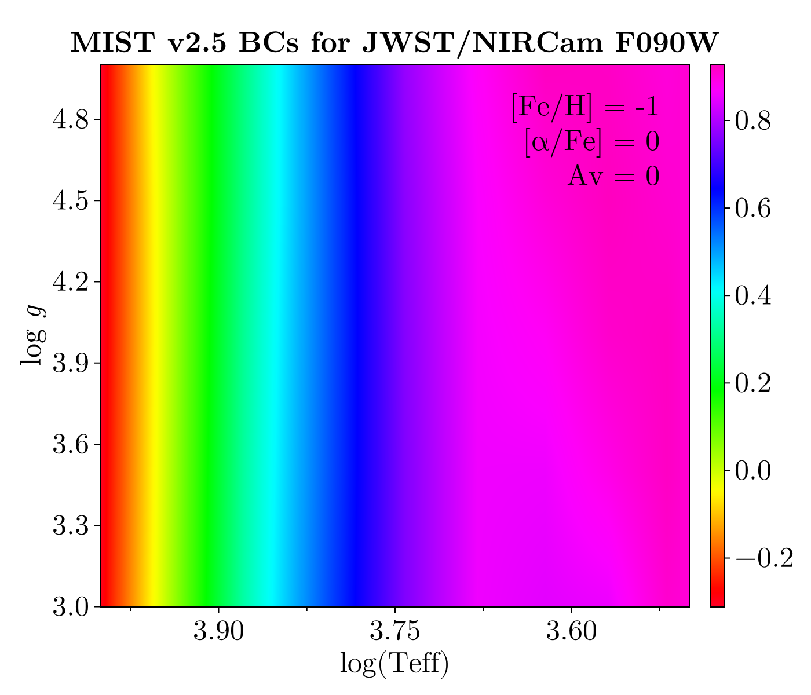
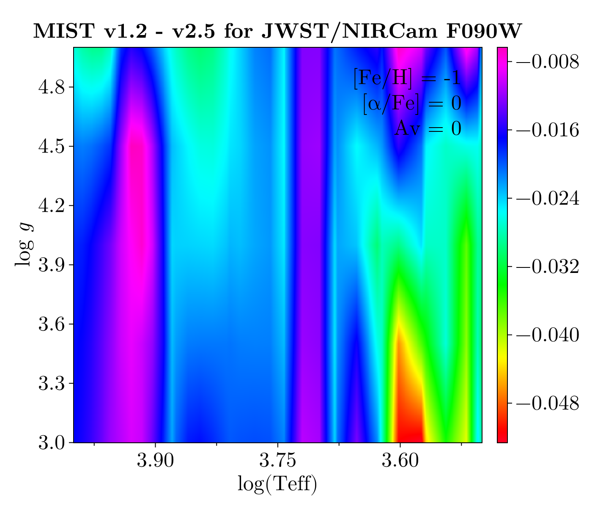

MIST v2.5
The MIST v2.5 BC grid extends the v1.2 grid by introducing [α/Fe] as a free parameter and assumes a different solar chemistry than v1.2. It also expands the photometric system coverage and revises the grid of dependent variables (temperature, surface gravity, etc.). The following figure shows a projection of a small portion of the BC table for one choice of metallicity, α-enhancement, and V-band extinction.

and here is the difference between the MIST v1.2 and v2.5 BCs for this filter and metallicity. Over this range of temperature and surface gravity, the v1.2 and v2.5 BCs are very similar.

Chemistry
The MIST v2.5 BC grid uses solar chemical abundances from Grevesse and Sauval (1998), in contrast to Asplund et al. (2009) used in v1.2. Because the grid also gives α-element abundances as a free parameter via [α/Fe], the metallicity coordinate [Fe/H] is no longer exactly equivalent to [M/H]. We provide BolometricCorrections.MIST.MISTv2Chemistry to access the v2.5 solar abundances following the chemical mixture API.
BolometricCorrections.MIST.MISTv2Chemistry — Type
MISTv2Chemistry()Singleton struct representing the MIST v2.5 chemical mixture, based on Grevesse and Sauval (1998) solar abundances (in contrast to Asplund et al. (2009) used in v1.2).
Protosolar (initial) values X, Y, and Z are taken from the solar calibration in Table 1 of Dotter et al. (2026). Photospheric values are derived from the GS98 ratio (Z/X)_phot = 0.023 and the calibrated surface helium abundance Ysurf = 0.2482. The primordial helium abundance Y_p is from Planck Collaboration (2016).
julia> using BolometricCorrections.MIST: MISTv2Chemistry, X, Y, Z, X_phot, Y_phot, Z_phot, MH;
julia> chem = MISTv2Chemistry();
julia> X(chem) + Y(chem) + Z(chem) ≈ 1 # solar protostellar values
true
julia> X_phot(chem) + Y_phot(chem) + Z_phot(chem) ≈ 1 # solar photospheric values
true
julia> MH(chem, Z(chem) * 0.1) ≈ -1.0231128936384866
true
julia> Z(chem, -1.0231128936384866) ≈ Z(chem) * 0.1
trueThe full range of dependent variables covered by this grid is given in the table below.
| min | max | |
|---|---|---|
| Teff | ≈1,500 K | ≈5,000,000 K |
| logg | −1.0 | 9.5 |
| [Fe/H] | −3.0 dex | +0.5 dex |
| [α/Fe] | −0.2 dex | +0.6 dex |
| Av | 0.0 mag | 6.0 mag |
| Rv | 3.1 | 3.1 |
The raw v2.5 tables store $\log_{10}(T_{\rm eff})$ rather than linear $T_{\rm eff}$. All public API still accepts and returns temperatures in Kelvin.
The full grid of unique values for the dependent variables is available in BolometricCorrections.MIST.gridinfov2.
keys(BolometricCorrections.MIST.gridinfov2)(:lgTef, :logg, :feh, :afe, :Av, :Rv)Types
BolometricCorrections.MIST.MISTv2BCGrid — Type
MISTv2BCGrid(grid::AbstractString)Load and return the MIST v2.5 bolometric corrections for the given photometric system grid. This type is used to create instances of MISTv2BCTable with fixed dependent grid variables ([Fe/H], [α/Fe], Av). Call an instance with (feh, afe, Av) arguments or use the MISTv2BCTable constructor directly.
julia> grid = MISTv2BCGrid("JWST")
MIST v2.5 bolometric correction grid for photometric system MIST_JWST_v2.5
julia> grid(-1.01, 0.2, 0.11)
MIST v2.5 bolometric correction table with [Fe/H] -1.01, [α/Fe] 0.2, and V-band extinction 0.11The constructor for MISTv2BCGrid accepts the same human-readable photometric system names as MISTv1BCGrid. In addition to all photometric systems available in v1.2, v2.5 adds:
- Euclid (VIS + NISP)
- JWST/NIRISS
- HST/ACS-SBC (far-UV channel)
- RoboAO (laser guide star AO system)
- Roman (Nancy Grace Roman Space Telescope)
MIST v1.2 provided BCs for preliminary Roman filters from when it was still called WFIRST. The MIST v2.5 BCs should be preferred for Roman.
The full list of registered photometric systems can be inspected at runtime:
show(stdout, "text/plain", filter(x -> occursin("MIST", x) & occursin("2.5", x), keys(DataDeps.registry)))Set{String} with 28 elements:
"MIST_CFHT_MegaCam_v2.5"
"MIST_HST_ACS_HRC_v2.5"
"MIST_Roman_v2.5"
"MIST_HST_ACS_SBC_v2.5"
"MIST_JWST_v2.5"
"MIST_SDSS_v2.5"
"MIST_GALEX_v2.5"
"MIST_HST_WFPC2_v2.5"
"MIST_WISE_v2.5"
"MIST_NIRISS_v2.5"
"MIST_SPLUS_v2.5"
"MIST_UVIT_v2.5"
"MIST_VISTA_v2.5"
"MIST_RoboAO_v2.5"
"MIST_UKIDSS_v2.5"
"MIST_LSST_v2.5"
"MIST_Swift_v2.5"
"MIST_UBVRIplus_v2.5"
"MIST_Euclid_v2.5"
"MIST_HST_WFC3_v2.5"
"MIST_SkyMapper_v2.5"
"MIST_DECam_v2.5"
"MIST_Spitzer_v2.5"
"MIST_PanSTARRS_v2.5"
"MIST_HSC_v2.5"
"MIST_Washington_v2.5"
"MIST_IPHAS_v2.5"
"MIST_HST_ACS_WFC_v2.5"Once a grid is constructed for a particular photometric system, a BC table with fixed [Fe/H], [α/Fe], and $A_V$ can be interpolated.
BolometricCorrections.MIST.MISTv2BCTable — Type
MISTv2BCTableA MIST v2.5 bolometric correction table with fixed [Fe/H], [α/Fe], and $A_V$. Callable with (Teff [K], logg [cgs]) to interpolate BCs.
Photometric Zeropoints
The MIST v2.5 bolometric corrections adopt the same solar bolometric magnitude $M_{\odot,\text{bol}} = 4.74$ and bolometric luminosity $L_\odot = 3.828 \times 10^{33}$ erg s⁻¹ as v1.2. The zeropoint table for converting between the AB, Vega, and ST systems is the same BolometricCorrections.MIST.zpt instance documented on the MIST overview page.
MIST v2.5 References
This page cites the following references:
- Asplund, M.; Grevesse, N.; Sauval, A. J. and Scott, P. (2009). The Chemical Composition of the Sun. Annual Review of Astronomy and Astrophysics 47, 481–522.
- Dotter, A.; Bauer, E. B.; Park, M.; Conroy, C.; Milone, A. P.; Joyce, M. and Cantiello, M. (2026). MESA Isochrones and Stellar Tracks (MIST). II. Models with alpha-enhanced Chemical Composition. ApJS 283, 64, arXiv:2602.22012 [astro-ph.SR].
- Grevesse, N. and Sauval, A. (1998). Standard Solar Composition. Space Science Reviews 85, 161–174.
- Planck Collaboration (2016). Planck 2015 results. XIII. Cosmological parameters. A&A 594, A13, arXiv:1502.01589v3 [astro-ph.CO].